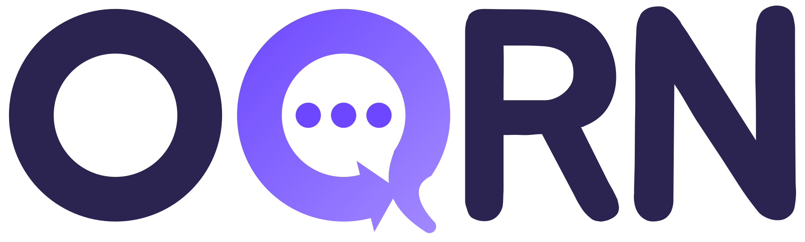

Q キット

ツールの色を変えて、部品の見え方を確かめる見本
見た目の決まり
- 背景は平らな色。グラデーションにしない（
--ls-bg・--ls-surface・--ls-surface-sub）。影も付けない - 余白は 8 の倍数。
--ls-space-s8・m16・l24・xl32・xxl48。xs4 は細かい所だけ - 文の頭をそろえる。左そろえ。中央は、数字だけの大きな表示・ボタンの中の文字など、中央が自然な所だけ
- 絵文字でなく線アイコン（ボタンは「線アイコン＋する言葉」。ux.md G3）。
<span class="ls-icon" data-icon="send" aria-hidden="true"></span>。JS はLineShareUI.icon("send") - 強弱は濃淡と太さ。文字は
--ls-text・--ls-subtext・--ls-faint、太さは 400・600・700。ツールの色と LINE の緑は、大事な所だけ（選んでいるものの色はそのまま） - むだな見出しを置かない。説明のくり返しになる見出し・中身が1つだけの見出しは外す
ツールの点検（直すときに上から見る）
node ../q-oqrn/tools/qtest/look.mjs .で L1〜L6 の数を見る（--listで行）- 背景・ボタン・見出しの
gradientを、平らな色（ツールの色か--ls-surface）に。box-shadowも外す - ツールの CSS の padding・margin・gap を
var(--ls-space-…)に。角は--ls-radius-sm/md/lg text-align: centerを外す（大きな数字・ボタンの中だけ残す）- ボタンの絵文字を線アイコンに（ux.md G3「線アイコン＋する言葉」）。ボタンでない前に決めた印・カードの中身・遊びの絵は、確かめてから
--ls-accentの色を使う所を減らす（選んでいるもの・決めた部品の色は残す）。わざと入れた見た目は、変えてよいか聞いてから- 見出しを1つずつ見て、なくても通じるものは外す
- 320px の幅と暗い表示で、前と後をくらべる（折り返し・1文字だけの行がないか）
余白と間
--ls-space-xs--ls-space-s--ls-space-m--ls-space-l--ls-space-xl--ls-space-xxlページの左右は 16、パネルの中は 16、並んだ部品の間は 8、かたまりの間は 16〜24。
線アイコン
Lucide（ISC ライセンス。shared/icons/LICENSE）。線の太さはどれも同じ。文字の色・大きさで出る。足すときは tools/icons.py。
ツールの色
各ツールでは :root { --ls-accent: … } か LineShareUI.setAccent("#…")。
入力・チップ・ボタン
しるしと名前（ls-pickfield）
開閉
中身。見出しの右の小さな表示は、空なら「なし」。
空のとき・読みこみ中
まだ記録がありません
目じるしと進みぐあい
これまでの合計を、目じるしとくらべて見せる（shared/milestones.js の QMilestones）。キロっくは「🐘 ゾウ 0.9 頭分」の重さ。ここは、つづく（続けた日数）で使うときの見本です。
<script src="https://katsuan.github.io/line-share/shared/milestones.js" defer></script>
// 目じるし（小さい順）と単位はツールが決める。big は届く前から表に見せる
const days = QMilestones.create({
marks: [
{ icon: "🌱", name: "三日坊主こえ", value: 3, count: "回" },
{ icon: "🌿", name: "1週間", value: 7, count: "回" },
{ icon: "🌳", name: "1か月", value: 30, count: "回", big: true },
{ icon: "🎉", name: "1年", value: 365, count: "回", big: true }
],
amount: (v) => Math.round(v) + "日" // 合計・「あと ◯」の書き方
});
el.innerHTML = days.goalHtml(total, { lead: "今日で 12日目" }); // 入れ物は .ls-goal
el.innerHTML = days.tableHtml(total, { title: "続けた日数", hint: "やめても減りません。" });
days.newlyPassed(before, after) // 越えた目じるし → days.passedTitle(mark)「🎉 🌿 1週間を越えました！」
// 記録を消しても減らない合計（同じ記録は2回数えない・直したら差の分）
const { ledger } = QMilestones.syncLedger(QMilestones.loadLedger("tsuzuq:days"), records.map((r) => ({ id: r.id, value: 1 })));
QMilestones.saveLedger("tsuzuq:days", ledger); // ledger.total が合計